Dragon Q6A
QCS6490
The current Kawn development and acceptance platform. The software experience is working on the configured prototype; a reproducible public image remains to be released.
See the validated scope →
Try the demo ↗Zaman OS is currently a development installation. Public flashable images are being prepared; there are no image downloads on this page yet.
QCS6490
The current Kawn development and acceptance platform. The software experience is working on the configured prototype; a reproducible public image remains to be released.
See the validated scope →A second way to experience Zaman
A Kawn-maintained image is planned. Board-specific graphics, audio, controllers, emulator behavior and recovery will be qualified before release.
Help prepare the port →A board-specific image, checksum and verification instructions, installation guide, tested controller and game matrix, release notes, known limitations, source references and a recovery procedure.
Support labels describe Kawn’s validation and maintenance. They do not imply endorsement by a board vendor. Features and game performance will vary between platforms.